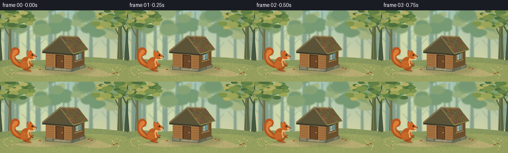
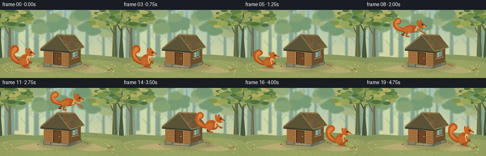

CODING AGENTS AS PIXEL WORLD MODELS
traex/GPT-6.1-Sol · dynamic_spatial_relationship_0024
点击播放 · 原生 RGB 像素
逐轮保存的候选
回放视频、检查图与代码变化。
每份候选均可单独播放。实际图片检查记录在下方工具轨迹中。
候选 01播放与检查图
点击播放 · 原生 RGB 像素


展开代码变化
--- 上一保存版本
+++ 本次保存版本
@@ -0,0 +1,267 @@
+from pathlib import Path
+import math
+import numpy as np
+from PIL import Image, ImageDraw, ImageFilter
+import artifact_io
+
+ROOT=Path(__file__).resolve().parent
+S=4
+W,H=256,144
+rng=np.random.default_rng(328)
+
+def pts(p): return [(int(x*S),int(y*S)) for x,y in p]
+def poly(d,p,c): d.polygon(pts(p), fill=c)
+def line(d,p,c,w=1): d.line(pts(p),fill=c,width=max(1,int(w*S)),joint='curve')
+def ell(d,b,c): d.ellipse(tuple(int(t*S) for t in b),fill=c)
+def bezier(start,segments):
+ out=[start]; p=np.array(start,dtype=float)
+ for a,b,c in segments:
+ a,b,c=map(lambda x:np.array(x,dtype=float),(a,b,c))
+ for t in np.linspace(0,1,22)[1:]:
+ q=(1-t)**3*p+3*(1-t)**2*t*a+3*(1-t)*t*t*b+t**3*c
+ out.append(tuple(q))
+ p=c
+ return out
+
+def path(d,start,seg,col): poly(d,bezier(start,seg),col)
+
+# Hand-painted forest: layered atmospheric silhouettes and sunlit grass.
+y,x=np.mgrid[0:H*S,0:W*S]; yy=y/S; xx=x/S
+sky=np.empty((H*S,W*S,3),float)
+a=np.clip(yy/120,0,1)[...,None]
+sky[:]=np.array([161,196,182])*(1-a)+np.array([222,218,165])*a
+sun=np.exp(-((xx-57)**2+(yy-28)**2)/3900)
+sky+=sun[...,None]*np.array([25,21,4])
+sky+=rng.normal(0,.55,sky.shape[:2])[...,None]
+bg=Image.fromarray(np.uint8(np.clip(sky,0,255)))
+d=ImageDraw.Draw(bg)
+for i in range(24):
+ tx=rng.uniform(-5,263); base=rng.uniform(88,113); wid=rng.uniform(1,3.5)
+ poly(d,[(tx-wid,base),(tx-1,4),(tx+wid,0),(tx+wid+2,base)],(135,163,143))
+ for j in range(3):
+ ty=rng.uniform(8,66); side=rng.choice([-1,1]); line(d,[(tx,ty+15),(tx+side*13,ty)],(135,163,143),.8)
+for i in range(100):
+ cx=rng.uniform(-15,270); cy=rng.uniform(-20,46); r=rng.uniform(7,20)
+ col=[(119,155,116),(135,164,117),(152,175,125),(169,184,133)][rng.integers(4)]
+ ell(d,(cx-r,cy-r*.65,cx+r,cy+r*.65),col)
+bg=bg.filter(ImageFilter.GaussianBlur(S*1.1));d=ImageDraw.Draw(bg)
+# Foreground framing trees.
+for tx,wid,c in [(-3,10,(74,91,65)),(20,5,(112,113,77)),(242,7,(95,105,66)),(260,12,(72,91,64))]:
+ poly(d,[(tx-wid,128),(tx-wid*.55,61),(tx-3,0),(tx+wid*.5,0),(tx+wid*.5,64),(tx+wid,127)],c)
+ line(d,[(tx-1,98),(tx-2,49),(tx+1,0)],tuple(min(255,a+22) for a in c),1.6)
+ line(d,[(tx,55),(tx-13,30),(tx-21,21)],c,2.3)
+ line(d,[(tx,38),(tx+15,16)],c,2)
+for i in range(150):
+ cx=rng.choice([rng.uniform(-15,63),rng.uniform(193,272)]);cy=rng.uniform(-12,36);r=rng.uniform(3,12)
+ col=[(81,115,65),(101,135,72),(126,151,78),(158,169,90),(183,180,102)][rng.integers(5)]
+ ell(d,(cx-r,cy-r*.45,cx+r,cy+r*.45),col)
+# Low hills and ground.
+path(d,(0,102),[((43,94),(58,103),(89,100)),((150,91),(192,93),(256,101)),((256,144),(256,144),(256,144)),((150,144),(50,144),(0,144))],(137,154,96))
+path(d,(0,115),[((43,104),(65,113),(100,113)),((154,104),(195,102),(256,111)),((256,144),(256,144),(256,144)),((130,144),(30,144),(0,144))],(157,167,99))
+# Clearing with a soft dirt trail.
+path(d,(29,127),[((63,115),(94,116),(123,116)),((170,109),(206,119),(229,131)),((195,138),(170,131),(144,127)),((102,130),(72,136),(29,127))],(187,176,118))
+for i in range(1700):
+ gx=rng.uniform(0,256);gy=rng.uniform(99,144)
+ if abs(gy-(121+.0008*(gx-127)**2))<4 and 28<gx<227: continue
+ ln=rng.uniform(.5,3.1);col=[(114,136,72),(134,151,82),(179,180,106),(197,188,118),(149,156,88)][rng.integers(5)]
+ line(d,[(gx,gy),(gx+rng.uniform(-1,1),gy-ln)],col,.28)
+for i in range(130):
+ gx=rng.uniform(24,235);gy=rng.uniform(116,135)
+ ell(d,(gx,gy,gx+rng.uniform(.3,1.1),gy+.4),(166,155,103))
+# Soft cabin cast shadow.
+sh=Image.new('RGBA',bg.size); ds=ImageDraw.Draw(sh)
+ell(ds,(82,108,191,129),(53,65,38,57));sh=sh.filter(ImageFilter.GaussianBlur(3*S));bg=Image.alpha_composite(bg.convert('RGBA'),sh).convert('RGB');d=ImageDraw.Draw(bg)
+# Stone footing.
+poly(d,[(91,111),(144,117),(172,108),(172,115),(145,124),(91,120)],(98,103,85))
+for p,c in [([(93,113),(105,114),(106,120),(92,118)],(134,131,102)), ([(108,115),(121,116),(122,122),(108,120)],(119,123,99)), ([(126,117),(143,119),(143,122),(126,122)],(145,138,110)), ([(149,117),(159,114),(159,119),(149,122)],(102,111,89)), ([(161,113),(170,110),(170,114),(161,118)],(127,128,102))]:poly(d,p,c)
+# Cabin walls, warm front and shaded side.
+poly(d,[(92,82),(145,86),(145,118),(92,113)],(162,112,63))
+poly(d,[(145,86),(170,77),(170,110),(145,118)],(109,82,47))
+# Horizontal timbers and wood grain.
+for j in range(7):
+ y0=82+j*4.5
+ line(d,[(93,y0),(145,y0+4)],(96,64,37),.7)
+ line(d,[(93,y0+1),(144,y0+5)],(196,142,79),.5)
+ line(d,[(146,y0+4),(169,y0-4)],(77,65,38),.6)
+ for k in range(4):
+ a=rng.uniform(94,140);ln=rng.uniform(3,12)
+ line(d,[(a,y0+2.2),(min(143,a+ln),y0+2.7)],(145,98,53),.25)
+# Front gable.
+poly(d,[(89,83),(120,58),(148,87)],(177,125,67))
+for k in range(9):
+ x0=94+k*5.5;top=58+abs(x0-120)*.86
+ line(d,[(x0,top),(x0,85)],(125,85,43),.5)
+# Dark doorway and inset door.
+poly(d,[(111,88),(130,90),(130,117),(111,115)],(75,52,34))
+poly(d,[(114,91),(128,92),(128,116),(114,115)],(110,73,41))
+for x0 in [117,121,125]:line(d,[(x0,92),(x0,115)],(79,54,32),.45)
+line(d,[(111,115),(111,88),(130,90),(130,117)],(210,156,86),1.1)
+ell(d,(124.3,102,126,103.7),(233,187,79));ell(d,(124.6,102,125.3,102.6),(255,226,139))
+# Window on shaded right wall, glinting blue-green glass.
+poly(d,[(151,89),(165,84),(165,99),(151,104)],(67,52,34))
+poly(d,[(153,90),(163,86.7),(163,97.7),(153,101)],(102,150,153))
+poly(d,[(154,90),(157,89),(157,99),(154,100)],(165,185,160))
+line(d,[(152,89),(164,85),(164,99),(152,103),(152,89)],(177,136,78),1)
+line(d,[(158,87),(158,101)],(140,105,58),.8);line(d,[(152,96),(164,92)],(140,105,58),.8)
+line(d,[(150,104),(166,99)],(184,143,85),1.4)
+# Deep eaves and sloping shingle roof.
+poly(d,[(85,81),(121,51),(157,52),(178,79),(148,91),(85,86)],(57,61,46))
+poly(d,[(85,81),(121,51),(148,84),(148,88),(85,83)],(91,84,57))
+roof=[(121,51),(157,52),(178,79),(148,88)]
+poly(d,roof,(111,94,63))
+# Rows of individual weathered cedar shingles on right roof plane.
+A=np.array([121.,51]);B=np.array([157.,52]);C=np.array([178.,79]);D=np.array([148.,88])
+def roofp(u,v):return tuple((1-v)*((1-u)*A+u*B)+v*((1-u)*D+u*C))
+for row in range(7):
+ v0=row/7;v1=(row+1)/7
+ for k in range(9):
+ u0=max(0,(k-(row%2)*.5)/8);u1=min(1,(k+1-(row%2)*.5)/8)
+ if u0>=u1: continue
+ col=(int(rng.integers(93,128)),int(rng.integers(79,105)),int(rng.integers(49,66)))
+ p=[roofp(u0,v0),roofp(u1,v0),roofp(u1,v1),roofp(u0,v1)];poly(d,p,col)
+ line(d,[p[3],p[2]],(64,63,44),.6)
+ line(d,[p[0],p[3]],(83,72,48),.4)
+ mid=(u0+u1)/2;line(d,[roofp(mid,v0+.025),roofp(mid,v1-.015)],(145,122,79),.28)
+line(d,[(85,83),(121,53),(148,88),(177,79)],(161,134,83),1.3)
+line(d,[(121,52),(157,53)],(174,149,98),1.5)
+# Moss catches sunlight on the old roof edges.
+for i in range(70):
+ t=rng.uniform(0,1);cx=149+28*t;cy=87-8*t+rng.uniform(-1,.5)
+ ell(d,(cx,cy,cx+rng.uniform(.5,2),cy+.65),tuple(rng.choice([(115,132,67),(137,144,76),(151,157,87)]).tolist()))
+# Doorstep, tiny flowers and mushrooms set scale.
+poly(d,[(111,117),(131,118),(133,121),(108,120)],(164,151,114));line(d,[(109,120),(133,121)],(112,113,88),.7)
+for cx,cy in [(80,120),(178,117),(184,119),(23,130),(229,128),(235,126)]:
+ line(d,[(cx,cy+3),(cx,cy-1)],(189,178,135),1.1)
+ ell(d,(cx-2.4,cy-2,cx+2.4,cy+.2),(150,72,40));ell(d,(cx-1.8,cy-1.6,cx-.5,cy-.7),(223,163,101))
+for i in range(25):
+ cx=rng.choice([rng.uniform(5,33),rng.uniform(220,249)]);cy=rng.uniform(115,140)
+ line(d,[(cx,cy),(cx+.2,cy-3)],(94,126,61),.45)
+ ell(d,(cx-1,cy-4,cx+1,cy-2.2),(221,203,127))
+
+# Squirrel is drawn with shaded, textured closed Bezier shapes.
+def squirrel(frame,x0,y0,flight,crouch=0,landing=0):
+ im=Image.new('RGBA',(W*S,H*S)); draw=ImageDraw.Draw(im)
+ def tr(p):
+ x,y=p
+ return (x0+x, y0+y*(1-.20*crouch))
+ def shp(start,segments,base,texture=True):
+ p=[tr(q) for q in bezier(start,segments)]
+ mask=Image.new('L',im.size); md=ImageDraw.Draw(mask);poly(md,p,255)
+ arr=np.asarray(mask)>0
+ sy,sx=np.where(arr)
+ if not len(sy):return
+ # Directional soft fur shading, brighter upper left.
+ g=np.clip(.98+.16*((x0-sx/S)/35)+.20*((y0-sy/S)/45),.78,1.24)
+ noise=np.random.default_rng(31).normal(0,2,len(sx)) if texture else 0
+ data=np.zeros((H*S,W*S,4),np.uint8)
+ for c in range(3):data[sy,sx,c]=np.uint8(np.clip(base[c]*g+noise,0,255))
+ data[sy,sx,3]=255
+ im.alpha_composite(Image.fromarray(data))
+ return p
+ f=flight
+ def blend(a,b):return tuple((1-f)*np.array(a)+f*np.array(b))
+ # Tail: one large, upward-curling bush, swept back during the leap.
+ tailstart=blend((-7,-5),(-11,-8))
+ standing=[((-22,-7),(-35,-16),(-34,-32)),((-34,-45),(-24,-52),(-17,-45)),((-11,-39),(-16,-32),(-23,-30)),((-25,-23),(-10,-20),(-7,-5))]
+ flying=[((-27,-6),(-45,-12),(-41,-27)),((-36,-40),(-26,-39),(-24,-31)),((-23,-26),(-30,-21),(-33,-24)),((-29,-17),(-18,-18),(-11,-8))]
+ seg=[tuple(blend(a,b) for a,b in zip(sa,sb)) for sa,sb in zip(standing,flying)]
+ shp(tailstart,seg,(154,72,28))
+ innerstart=blend((-10,-9),(-15,-10))
+ innerstand=[((-26,-12),(-32,-23),(-29,-35)),((-26,-44),(-20,-45),(-18,-40)),((-18,-34),(-22,-34),(-25,-30)),((-26,-19),(-17,-15),(-10,-9))]
+ innerfly=[((-29,-10),(-40,-17),(-37,-29)),((-32,-35),(-27,-35),(-27,-30)),((-27,-27),(-31,-24),(-34,-27)),((-35,-18),(-25,-14),(-15,-10))]
+ shp(innerstart,[tuple(blend(a,b) for a,b in zip(sa,sb)) for sa,sb in zip(innerstand,innerfly)],(194,103,40))
+ # Fine flow lines follow the tail's curl.
+ for k in range(16):
+ t=k/15
+ a=blend((-11-t*14,-12-t*10),(-15-t*19,-12-t*8))
+ b=blend((-31-t*1,-23-t*14),(-40+t*2,-22-t*10))
+ c=blend((-27+t*7,-42+t*2),(-32+t*6,-35+t*2))
+ line(draw,[tr(q) for q in bezier(a,[(b,b,c)])],(210,127,58,150),.22)
+ # Far rear foot and far reaching foreleg.
+ farhind=blend((-7,-4),(-16,-7));farend=blend((1,-1),(-23,-1))
+ line(draw,[tr(farhind),tr(farend),tr((farend[0]+5,farend[1]+.4))],(122,59,25),3.0)
+ fararm=blend((4,-18),(9,-14));farhand=blend((10,-10),(22,-7))
+ line(draw,[tr(fararm),tr(farhand),tr((farhand[0]+3,farhand[1]+.2))],(136,62,24),2.6)
+ # Streamlined torso blends into upright resting pose.
+ start=blend((-6,-27),(-14,-20))
+ st=[((3,-31),(8,-23),(8,-15)),((10,-4),(4,0),(-5,-3)),((-16,-5),(-15,-21),(-6,-27))]
+ fl=[((-6,-25),(9,-22),(12,-15)),((14,-9),(3,-4),(-8,-6)),((-20,-6),(-23,-15),(-14,-20))]
+ shp(start,[tuple(blend(a,b) for a,b in zip(sa,sb)) for sa,sb in zip(st,fl)],(176,84,31))
+ # Pale cream breast visible beneath the orange neck.
+ cs=blend((4,-26),(9,-20))
+ cst=[((11,-24),(8,-12),(4,-8)),((1,-11),(0,-19),(4,-26))]
+ cfl=[((16,-18),(13,-12),(4,-8)),((4,-12),(7,-16),(9,-20))]
+ shp(cs,[tuple(blend(a,b) for a,b in zip(sa,sb)) for sa,sb in zip(cst,cfl)],(224,176,112))
+ # Rounded muscular haunch.
+ hs=blend((-8,-18),(-13,-15))
+ hst=[((-2,-23),(5,-16),(2,-8)),((0,-1),(-9,-2),(-12,-8)),((-14,-13),(-12,-17),(-8,-18))]
+ hfl=[((-5,-21),(2,-15),(-3,-9)),((-8,-3),(-16,-6),(-18,-9)),((-20,-13),(-17,-15),(-13,-15))]
+ shp(hs,[tuple(blend(a,b) for a,b in zip(sa,sb)) for sa,sb in zip(hst,hfl)],(191,97,36))
+ hip=blend((-3,-6),(-11,-8));ankle=blend((0,-1),(-14,2));toes=blend((8,0),(-7,2))
+ line(draw,[tr(hip),tr(ankle),tr(toes)],(172,82,30),3.0)
+ line(draw,[tr((ankle[0]+1,ankle[1]-.5)),tr((toes[0]-.5,toes[1]-.5))],(219,143,69),.7)
+ # Near arm changes from bent to extended.
+ arm=blend((5,-20),(9,-15));elbow=blend((6,-14),(16,-10));hand=blend((12,-14),(26,-4))
+ line(draw,[tr(arm),tr(elbow),tr(hand)],(188,94,34),3.0)
+ line(draw,[tr((arm[0],arm[1]-.4)),tr((elbow[0]+.5,elbow[1]-.7)),tr((hand[0],hand[1]-.7))],(223,143,64),.65)
+ for j in range(3):line(draw,[tr((hand[0]-1,hand[1]+j*.55)),tr((hand[0]+2,hand[1]+j*.55))],(92,52,29),.24)
+ # Ears and pointed tufts, behind the head.
+ hx,hy=blend((7,-30),(16,-21))
+ for off in [-5,1]:
+ shp((hx+off-2,hy-3),[ ((hx+off-3,hy-10),(hx+off-1,hy-14),(hx+off+1,hy-10)),((hx+off+4,hy-7),(hx+off+4,hy-4),(hx+off-2,hy-3))],(162,73,29))
+ poly(draw,[tr((hx+off-1,hy-5)),tr((hx+off,hy-10)),tr((hx+off+2,hy-5))],(217,133,85))
+ # Head and cheek.
+ shp((hx-7,hy-1),[((hx-6,hy-9),(hx+3,hy-10),(hx+7,hy-4)),((hx+10,hy-2),(hx+15,hy+1),(hx+11,hy+4)),((hx+5,hy+8),(hx-4,hy+7),(hx-7,hy-1))],(190,95,34))
+ shp((hx+5,hy+2),[((hx+10,hy),(hx+15,hy+2),(hx+12,hy+4)),((hx+9,hy+6),(hx+5,hy+5),(hx+5,hy+2))],(225,173,107))
+ def localell(b,c):
+ p=tr((b[0],b[1]));q=tr((b[2],b[3]));ell(draw,(*p,*q),c)
+ # Bright dark eye, tiny nose and expressive whiskers.
+ localell((hx+2,hy-4.5,hx+6.2,hy-.2),(121,66,28))
+ localell((hx+2.7,hy-4,hx+5.7,hy-1),(28,24,19))
+ localell((hx+3.1,hy-3.7,hx+4.1,hy-2.7),(255,240,201))
+ localell((hx+11,hy+.9,hx+13.4,hy+2.7),(61,38,26))
+ line(draw,[tr((hx+12,hy+3)),tr((hx+9,hy+4)),tr((hx+7,hy+3.7))],(119,72,43),.35)
+ for j in range(3):line(draw,[tr((hx+9,hy+3)),tr((hx+17,hy+1+j*2))],(234,215,171,180),.18)
+ # Short fur marks on cheek and torso preserve a natural coat texture.
+ rr=np.random.default_rng(26)
+ for k in range(50):
+ px=rr.uniform(-9,4);py=rr.uniform(-24,-8)
+ if f: px-=4;py+=4
+ line(draw,[tr((px,py)),tr((px+1,py+1.6))],(222,136,60,125),.18)
+ return im
+
+frames=[]
+for i in range(20):
+ # Pause, coil, a single clean ballistic jump, then settle on the right.
+ if i<=3:
+ sx=54; sy=122+math.sin(i*1.2)*.35; f=0;c=0
+ elif i<=5:
+ sx=54+(i-3)*1.;sy=122;f=0;c=(i-3)/2
+ elif i<=14:
+ u=(i-5)/10
+ sx=56+152*u;sy=122-81*4*u*(1-u);f=min(1,math.sin(math.pi*u)*1.65);c=0
+ elif i==15:
+ sx=208;sy=122;f=.1;c=.8
+ else:
+ sx=208+min(i-16,2)*1.0;sy=122;f=0;c=max(0,.45-(i-16)*.3)
+ im=bg.copy().convert('RGBA')
+ # Grounded, softened contact shadow remains on the clearing below the airborne squirrel.
+ shadow=Image.new('RGBA',im.size);sd=ImageDraw.Draw(shadow)
+ alt=max(0,122-sy);r=11+alt*.045;alpha=int(60-alt*.45)
+ ell(sd,(sx-r-5,120.5,sx+r,124.5),(57,62,35,alpha));shadow=shadow.filter(ImageFilter.GaussianBlur(S*(1+alt*.015)))
+ im=Image.alpha_composite(im,shadow)
+ im=Image.alpha_composite(im,squirrel(i,sx,sy,f,c))
+ # A few dust flecks lift at takeoff and landing; not a second jump.
+ if i in [6,7,15,16]:
+ dust=Image.new('RGBA',im.size);dd=ImageDraw.Draw(dust);xc=56 if i<10 else 208
+ for k in range(8):
+ px=xc-4-k*1.15;py=121-(k%3)*1.2-(1 if i in [7,16] else 0)
+ ell(dd,(px,py,px+.7,py+.65),(219,194,133,100 if i in [6,15] else 45))
+ im=Image.alpha_composite(im,dust)
+ # Very mild warm film grain and vignette, consistently fixed in screen space.
+ out=np.asarray(im.convert('RGB').resize((W,H),Image.Resampling.LANCZOS)).astype(float)
+ yf,xf=np.mgrid[0:H,0:W];v=1-.07*((xf-128)/165)**2-.025*((yf-70)/105)**2
+ out*=v[...,None]
+ frames.append(np.uint8(np.clip(out,0,255)))
+artifact_io.save(np.stack(frames),ROOT)
+print('Saved 20 RGB frames at 256 x 144, 4 fps.')
可观测工具轨迹
实际执行的命令与返回图片。
命令 1exit 0
/bin/bash -lc 'ls -la; cat prompt.txt; cat GENERATION_RULES.md; cat task_spec.json'
命令 2exit 0
/bin/bash -lc "cat artifact_io.py; python - <<'PY'
import PIL,numpy
print('PIL/numpy available')
PY"命令 3exit 1
/bin/bash -lc "cat > generate.py <<'PY'
from pathlib import Path
import math
import numpy as np
from PIL import Image, ImageDraw, ImageFilter
import artifact_io
ROOT=Path(__file__).resolve().parent
S=4
W,H=256,144
rng=np.random.default_rng(328)
def pts(p): return [(int(x*S),int(y*S)) for x,y in p]
def poly(d,p,c): d.polygon(pts(p), fill=c)
def line(d,p,c,w=1): d.line(pts(p),fill=c,width=max(1,int(w*S)),joint='curve')
def ell(d,b,c): d.ellipse(tuple(int(t*S) for t in b),fill=c)
def bezier(start,segments):
out=[start]; p=np.array(start,dtype=float)
for a,b,c in segments:
a,b,c=map(lambda x:np.array(x,dtype=float),(a,b,c))
for t in np.linspace(0,1,22)[1:]:
q=(1-t)**3*p+3*(1-t)**2*t*a+3*(1-t)*t*t*b+t**3*c
out.append(tuple(q))
p=c
return out
def path(d,start,seg,col): poly(d,bezier(start,seg),col)
# Hand-painted forest: layered atmospheric silhouettes and sunlit grass.
y,x=np.mgrid[0:H*S,0:W*S]; yy=y/S; xx=x/S
sky=np.empty((H*S,W*S,3),float)
a=np.clip(yy/120,0,1)[...,None]
sky[:]=np.array([161,196,182])*(1-a)+np.array([222,218,165])*a
sun=np.exp(-((xx-57)**2+(yy-28)**2)/3900)
sky+=sun[...,None]*np.array([25,21,4])
sky+=rng.normal(0,.55,sky.shape[:2])[...,None]
bg=Image.fromarray(np.uint8(np.clip(sky,0,255)))
d=ImageDraw.Draw(bg)
for i in range(24):
tx=rng.uniform(-5,263); base=rng.uniform(88,113); wid=rng.uniform(1,3.5)
poly(d,[(tx-wid,base),(tx-1,4),(tx+wid,0),(tx+wid+2,base)],(135,163,143))
for j in range(3):
ty=rng.uniform(8,66); side=rng.choice([-1,1]); line(d,[(tx,ty+15),(tx+side*13,ty)],(135,163,143),.8)
for i in range(100):
cx=rng.uniform(-15,270); cy=rng.uniform(-20,46); r=rng.uniform(7,20)
col=[(119,155,116),(135,164,117),(152,175,125),(169,184,133)][rng.integers(4)]
ell(d,(cx-r,cy-r*.65,cx+r,cy+r*.65),col)
bg=bg.filter(ImageFilter.GaussianBlur(S*1.1));d=ImageDraw.Draw(bg)
# Foreground framing trees.
for tx,wid,c in [(-3,10,(74,91,65)),(20,5,(112,113,77)),(242,7,(95,105,66)),(260,12,(72,91,64))]:
poly(d,[(tx-wid,128),(tx-wid*.55,61),(tx-3,0),(tx+wid*.5,0),(tx+wid*.5,64),(tx+wid,127)],c)
line(d,[(tx-1,98),(tx-2,49),(tx+1,0)],tuple(min(255,a+22) for a in c),1.6)
line(d,[(tx,55),(tx-13,30),(tx-21,21)],c,2.3)
line(d,[(tx,38),(tx+15,16)],c,2)
for i in range(150):
cx=rng.choice([rng.uniform(-15,63),rng.uniform(193,272)]);cy=rng.uniform(-12,36);r=rng.uniform(3,12)
col=[(81,115,65),(101,135,72),(126,151,78),(158,169,90),(183,180,102)][rng.integers(5)]
ell(d,(cx-r,cy-r*.45,cx+r,cy+r*.45),col)
# Low hills and ground.
path(d,(0,102),[((43,94),(58,103),(89,100)),((150,91),(192,93),(256,101)),((256,144),(256,144),(256,144)),((150,144),(50,144),(0,144))],(137,154,96))
path(d,(0,115),[((43,104),(65,113),(100,113)),((154,104),(195,102),(256,111)),((256,144),(256,144),(256,144)),((130,144),(30,144),(0,144))],(157,167,99))
# Clearing with a soft dirt trail.
path(d,(29,127),[((63,115),(94,116),(123,116)),((170,109),(206,119),(229,131)),((195,138),(170,131),(144,127)),((102,130),(72,136),(29,127))],(187,176,118))
for i in range(1700):
gx=rng.uniform(0,256);gy=rng.uniform(99,144)
if abs(gy-(121+.0008*(gx-127)**2))<4 and 28<gx<227: continue
ln=rng.uniform(.5,3.1);col=[(114,136,72),(134,151,82),(179,180,106),(197,188,118),(149,156,88)][rng.integers(5)]
line(d,[(gx,gy),(gx+rng.uniform(-1,1),gy-ln)],col,.28)
for i in range(130):
gx=rng.uniform(24,235);gy=rng.uniform(116,135)
ell(d,(gx,gy,gx+rng.uniform(.3,1.1),gy+.4),(166,155,103))
# Soft cabin cast shadow.
sh=Image.new('RGBA',bg.size); ds=ImageDraw.Draw(sh)
ell(ds,(82,108,191,129),(53,65,38,57));sh=sh.filter(ImageFilter.GaussianBlur(3*S));bg=Image.alpha_composite(bg.convert('RGBA'),sh).convert('RGB');d=ImageDraw.Draw(bg)
# Stone footing.
poly(d,[(91,111),(144,117),(172,108),(172,115),(145,124),(91,120)],(98,103,85))
for p,c in [([(93,113),(105,114),(106,120),(92,118)],(134,131,102)), ([(108,115),(121,116),(122,122),(108,120)],(119,123,99)), ([(126,117),(143,119),(143,122),(126,122)],(145,138,110)), ([(149,117),(159,114),(159,119),(149,122)],(102,111,89)), ([(161,113),(170,110),(170,114),(161,118)],(127,128,102))]:poly(d,p,c)
# Cabin walls, warm front and shaded side.
poly(d,[(92,82),(145,86),(145,118),(92,113)],(162,112,63))
poly(d,[(145,86),(170,77),(170,110),(145,118)],(109,82,47))
# Horizontal timbers and wood grain.
for j in range(7):
y0=82+j*4.5
line(d,[(93,y0),(145,y0+4)],(96,64,37),.7)
line(d,[(93,y0+1),(144,y0+5)],(196,142,79),.5)
line(d,[(146,y0+4),(169,y0-4)],(77,65,38),.6)
for k in range(4):
a=rng.uniform(94,140);ln=rng.uniform(3,12)
line(d,[(a,y0+2.2),(min(143,a+ln),y0+2.7)],(145,98,53),.25)
# Front gable.
poly(d,[(89,83),(120,58),(148,87)],(177,125,67))
for k in range(9):
x0=94+k*5.5;top=58+abs(x0-120)*.86
line(d,[(x0,top),(x0,85)],(125,85,43),.5)
# Dark doorway and inset door.
poly(d,[(111,88),(130,90),(130,117),(111,115)],(75,52,34))
poly(d,[(114,91),(128,92),(128,116),(114,115)],(110,73,41))
for x0 in [117,121,125]:line(d,[(x0,92),(x0,115)],(79,54,32),.45)
line(d,[(111,115),(111,88),(130,90),(130,117)],(210,156,86),1.1)
ell(d,(124.3,102,126,103.7),(233,187,79));ell(d,(124.6,102,125.3,102.6),(255,226,139))
# Window on shaded right wall, glinting blue-green glass.
poly(d,[(151,89),(165,84),(165,99),(151,104)],(67,52,34))
poly(d,[(153,90),(163,86.7),(163,97.7),(153,101)],(102,150,153))
poly(d,[(154,90),(157,89),(157,99),(154,100)],(165,185,160))
line(d,[(152,89),(164,85),(164,99),(152,103),(152,89)],(177,136,78),1)
line(d,[(158,87),(158,101)],(140,105,58),.8);line(d,[(152,96),(164,92)],(140,105,58),.8)
line(d,[(150,104),(166,99)],(184,143,85),1.4)
# Deep eaves and sloping shingle roof.
poly(d,[(85,81),(121,51),(157,52),(178,79),(148,91),(85,86)],(57,61,46))
poly(d,[(85,81),(121,51),(148,84),(148,88),(85,83)],(91,84,57))
roof=[(121,51),(157,52),(178,79),(148,88)]
poly(d,roof,(111,94,63))
# Rows of individual weathered cedar shingles on right roof plane.
A=np.array([121.,51]);B=np.array([157.,52]);C=np.array([178.,79]);D=np.array([148.,88])
def roofp(u,v):return tuple((1-v)*((1-u)*A+u*B)+v*((1-u)*D+u*C))
for row in range(7):
v0=row/7;v1=(row+1)/7
for k in range(9):
u0=max(0,(k-(row%2)*.5)/8);u1=min(1,(k+1-(row%2)*.5)/8)
if u0>=u1: continue
col=(int(rng.integers(93,128)),int(rng.integers(79,105)),int(rng.integers(49,66)))
p=[roofp(u0,v0),roofp(u1,v0),roofp(u1,v1),roofp(u0,v1)];poly(d,p,col)
line(d,[p[3],p[2]],(64,63,44),.6)
line(d,[p[0],p[3]],(83,72,48),.4)
mid=(u0+u1)/2;line(d,[roofp(mid,v0+.025),roofp(mid,v1-.015)],(145,122,79),.28)
line(d,[(85,83),(121,53),(148,88),(177,79)],(161,134,83),1.3)
line(d,[(121,52),(157,53)],(174,149,98),1.5)
# Moss catches sunlight on the old roof edges.
for i in range(70):
t=rng.uniform(0,1);cx=149+28*t;cy=87-8*t+rng.uniform(-1,.5)
ell(d,(cx,cy,cx+rng.uniform(.5,2),cy+.65),rng.choice([(115,132,67),(137,144,76),(151,157,87)]).tolist())
# Doorstep, tiny flowers and mushrooms set scale.
poly(d,[(111,117),(131,118),(133,121),(108,120)],(164,151,114));line(d,[(109,120),(133,121)],(112,113,88),.7)
for cx,cy in [(80,120),(178,117),(184,119),(23,130),(229,128),(235,126)]:
line(d,[(cx,cy+3),(cx,cy-1)],(189,178,135),1.1)
ell(d,(cx-2.4,cy-2,cx+2.4,cy+.2),(150,72,40));ell(d,(cx-1.8,cy-1.6,cx-.5,cy-.7),(223,163,101))
for i in range(25):
cx=rng.choice([rng.uniform(5,33),rng.uniform(220,249)]);cy=rng.uniform(115,140)
line(d,[(cx,cy),(cx+.2,cy-3)],(94,126,61),.45)
ell(d,(cx-1,cy-4,cx+1,cy-2.2),(221,203,127))
# Squirrel is drawn with shaded, textured closed Bezier shapes.
def squirrel(frame,x0,y0,flight,crouch=0,landing=0):
im=Image.new('RGBA',(W*S,H*S)); draw=ImageDraw.Draw(im)
def tr(p):
x,y=p
return (x0+x, y0+y*(1-.20*crouch))
def shp(start,segments,base,texture=True):
p=[tr(q) for q in bezier(start,segments)]
mask=Image.new('L',im.size); md=ImageDraw.Draw(mask);poly(md,p,255)
arr=np.asarray(mask)>0
sy,sx=np.where(arr)
if not len(sy):return
# Directional soft fur shading, brighter upper left.
g=np.clip(.98+.16*((x0-sx/S)/35)+.20*((y0-sy/S)/45),.78,1.24)
noise=np.random.default_rng(31).normal(0,2,len(sx)) if texture else 0
data=np.zeros((H*S,W*S,4),np.uint8)
for c in range(3):data[sy,sx,c]=np.uint8(np.clip(base[c]*g+noise,0,255))
data[sy,sx,3]=255
im.alpha_composite(Image.fromarray(data))
return p
f=flight
def blend(a,b):return tuple((1-f)*np.array(a)+f*np.array(b))
# Tail: one large, upward-curling bush, swept back during the leap.
tailstart=blend((-7,-5),(-11,-8))
standing=[((-22,-7),(-35,-16),(-34,-32)),((-34,-45),(-24,-52),(-17,-45)),((-11,-39),(-16,-32),(-23,-30)),((-25,-23),(-10,-20),(-7,-5))]
flying=[((-27,-6),(-45,-12),(-41,-27)),((-36,-40),(-26,-39),(-24,-31)),((-23,-26),(-30,-21),(-33,-24)),((-29,-17),(-18,-18),(-11,-8))]
seg=[tuple(blend(a,b) for a,b in zip(sa,sb)) for sa,sb in zip(standing,flying)]
shp(tailstart,seg,(154,72,28))
innerstart=blend((-10,-9),(-15,-10))
innerstand=[((-26,-12),(-32,-23),(-29,-35)),((-26,-44),(-20,-45),(-18,-40)),((-18,-34),(-22,-34),(-25,-30)),((-26,-19),(-17,-15),(-10,-9))]
innerfly=[((-29,-10),(-40,-17),(-37,-29)),((-32,-35),(-27,-35),(-27,-30)),((-27,-27),(-31,-24),(-34,-27)),((-35,-18),(-25,-14),(-15,-10))]
shp(innerstart,[tuple(blend(a,b) for a,b in zip(sa,sb)) for sa,sb in zip(innerstand,innerfly)],(194,103,40))
# Fine flow lines follow the tail's curl.
for k in range(16):
t=k/15
a=blend((-11-t*14,-12-t*10),(-15-t*19,-12-t*8))
b=blend((-31-t*1,-23-t*14),(-40+t*2,-22-t*10))
c=blend((-27+t*7,-42+t*2),(-32+t*6,-35+t*2))
line(draw,[tr(q) for q in bezier(a,[(b,b,c)])],(210,127,58,150),.22)
# Far rear foot and far reaching foreleg.
farhind=blend((-7,-4),(-16,-7));farend=blend((1,-1),(-23,-1))
line(draw,[tr(farhind),tr(farend),tr((farend[0]+5,farend[1]+.4))],(122,59,25),3.0)
fararm=blend((4,-18),(9,-14));farhand=blend((10,-10),(22,-7))
line(draw,[tr(fararm),tr(farhand),tr((farhand[0]+3,farhand[1]+.2))],(136,62,24),2.6)
# Streamlined torso blends into upright resting pose.
start=blend((-6,-27),(-14,-20))
st=[((3,-31),(8,-23),(8,-15)),((10,-4),(4,0),(-5,-3)),((-16,-5),(-15,-21),(-6,-27))]
fl=[((-6,-25),(9,-22),(12,-15)),((14,-9),(3,-4),(-8,-6)),((-20,-6),(-23,-15),(-14,-20))]
shp(start,[tuple(blend(a,b) for a,b in zip(sa,sb)) for sa,sb in zip(st,fl)],(176,84,31))
# Pale cream breast visible beneath the orange neck.
cs=blend((4,-26),(9,-20))
cst=[((11,-24),(8,-12),(4,-8)),((1,-11),(0,-19),(4,-26))]
cfl=[((16,-18),(13,-12),(4,-8)),((4,-12),(7,-16),(9,-20))]
shp(cs,[tuple(blend(a,b) for a,b in zip(sa,sb)) for sa,sb in zip(cst,cfl)],(224,176,112))
# Rounded muscular haunch.
hs=blend((-8,-18),(-13,-15))
hst=[((-2,-23),(5,-16),(2,-8)),((0,-1),(-9,-2),(-12,-8)),((-14,-13),(-12,-17),(-8,-18))]
hfl=[((-5,-21),(2,-15),(-3,-9)),((-8,-3),(-16,-6),(-18,-9)),((-20,-13),(-17,-15),(-13,-15))]
shp(hs,[tuple(blend(a,b) for a,b in zip(sa,sb)) for sa,sb in zip(hst,hfl)],(191,97,36))
hip=blend((-3,-6),(-11,-8));ankle=blend((0,-1),(-14,2));toes=blend((8,0),(-7,2))
line(draw,[tr(hip),tr(ankle),tr(toes)],(172,82,30),3.0)
line(draw,[tr((ankle[0]+1,ankle[1]-.5)),tr((toes[0]-.5,toes[1]-.5))],(219,143,69),.7)
# Near arm changes from bent to extended.
arm=blend((5,-20),(9,-15));elbow=blend((6,-14),(16,-10));hand=blend((12,-14),(26,-4))
line(draw,[tr(arm),tr(elbow),tr(hand)],(188,94,34),3.0)
line(draw,[tr((arm[0],arm[1]-.4)),tr((elbow[0]+.5,elbow[1]-.7)),tr((hand[0],hand[1]-.7))],(223,143,64),.65)
for j in range(3):line(draw,[tr((hand[0]-1,hand[1]+j*.55)),tr((hand[0]+2,hand[1]+j*.55))],(92,52,29),.24)
# Ears and pointed tufts, behind the head.
hx,hy=blend((7,-30),(16,-21))
for off in [-5,1]:
shp((hx+off-2,hy-3),[ ((hx+off-3,hy-10),(hx+off-1,hy-14),(hx+off+1,hy-10)),((hx+off+4,hy-7),(hx+off+4,hy-4),(hx+off-2,hy-3))],(162,73,29))
poly(draw,[tr((hx+off-1,hy-5)),tr((hx+off,hy-10)),tr((hx+off+2,hy-5))],(217,133,85))
# Head and cheek.
shp((hx-7,hy-1),[((hx-6,hy-9),(hx+3,hy-10),(hx+7,hy-4)),((hx+10,hy-2),(hx+15,hy+1),(hx+11,hy+4)),((hx+5,hy+8),(hx-4,hy+7),(hx-7,hy-1))],(190,95,34))
shp((hx+5,hy+2),[((hx+10,hy),(hx+15,hy+2),(hx+12,hy+4)),((hx+9,hy+6),(hx+5,hy+5),(hx+5,hy+2))],(225,173,107))
def localell(b,c):
p=tr((b[0],b[1]));q=tr((b[2],b[3]));ell(draw,(*p,*q),c)
# Bright dark eye, tiny nose and expressive whiskers.
localell((hx+2,hy-4.5,hx+6.2,hy-.2),(121,66,28))
localell((hx+2.7,hy-4,hx+5.7,hy-1),(28,24,19))
localell((hx+3.1,hy-3.7,hx+4.1,hy-2.7),(255,240,201))
localell((hx+11,hy+.9,hx+13.4,hy+2.7),(61,38,26))
line(draw,[tr((hx+12,hy+3)),tr((hx+9,hy+4)),tr((hx+7,hy+3.7))],(119,72,43),.35)
for j in range(3):line(draw,[tr((hx+9,hy+3)),tr((hx+17,hy+1+j*2))],(234,215,171,180),.18)
# Short fur marks on cheek and torso preserve a natural coat texture.
rr=np.random.default_rng(26)
for k in range(50):
px=rr.uniform(-9,4);py=rr.uniform(-24,-8)
if f: px-=4;py+=4
line(draw,[tr((px,py)),tr((px+1,py+1.6))],(222,136,60,125),.18)
return im
frames=[]
for i in range(20):
# Pause, coil, a single clean ballistic jump, then settle on the right.
if i<=3:
sx=54; sy=122+math.sin(i*1.2)*.35; f=0;c=0
elif i<=5:
sx=54+(i-3)*1.;sy=122;f=0;c=(i-3)/2
elif i<=14:
u=(i-5)/10
sx=56+152*u;sy=122-81*4*u*(1-u);f=min(1,math.sin(math.pi*u)*1.65);c=0
elif i==15:
sx=208;sy=122;f=.1;c=.8
else:
sx=208+min(i-16,2)*1.0;sy=122;f=0;c=max(0,.45-(i-16)*.3)
im=bg.copy().convert('RGBA')
# Grounded, softened contact shadow remains on the clearing below the airborne squirrel.
shadow=Image.new('RGBA',im.size);sd=ImageDraw.Draw(shadow)
alt=max(0,122-sy);r=11+alt*.045;alpha=int(60-alt*.45)
ell(sd,(sx-r-5,120.5,sx+r,124.5),(57,62,35,alpha));shadow=shadow.filter(ImageFilter.GaussianBlur(S*(1+alt*.015)))
im=Image.alpha_composite(im,shadow)
im=Image.alpha_composite(im,squirrel(i,sx,sy,f,c))
# A few dust flecks lift at takeoff and landing; not a second jump.
if i in [6,7,15,16]:
dust=Image.new('RGBA',im.size);dd=ImageDraw.Draw(dust);xc=56 if i<10 else 208
for k in range(8):
px=xc-4-k*1.15;py=121-(k%3)*1.2-(1 if i in [7,16] else 0)
ell(dd,(px,py,px+.7,py+.65),(219,194,133,100 if i in [6,15] else 45))
im=Image.alpha_composite(im,dust)
# Very mild warm film grain and vignette, consistently fixed in screen space.
out=np.asarray(im.convert('RGB').resize((W,H),Image.Resampling.LANCZOS)).astype(float)
yf,xf=np.mgrid[0:H,0:W];v=1-.07*((xf-128)/165)**2-.025*((yf-70)/105)**2
out*=v[...,None]
frames.append(np.uint8(np.clip(out,0,255)))
artifact_io.save(np.stack(frames),ROOT)
print('Saved 20 RGB frames at 256 x 144, 4 fps.')
PY
python generate.py"命令 4exit 0
/bin/bash -lc "sed -i 's/rng.choice(\\[(115,132,67),(137,144,76),(151,157,87)\\]).tolist()/tuple(rng.choice([(115,132,67),(137,144,76),(151,157,87)]).tolist())/' generate.py python generate.py"
命令 5exit 0
/bin/bash -lc "python - <<'PY'
import numpy as np
from pathlib import Path
from PIL import Image
p=Path('.')
a=np.load(p/'pixels.npz')['pixels']
assert a.shape==(144,256,20)
fs=sorted((p/'frames').glob('*.png'))
assert len(fs)==20
assert all(Image.open(f).mode=='RGB' and Image.open(f).size==(256,144) for f in fs)
print('Verified:', a.shape, '20 RGB PNG frames; player and inspection:', (p/'index.html').exists(), (p/'inspection.png').exists())
PY"视觉工具实际返回图片 1

保存候选 1 份；完成命令 5 次；可验证图片返回 1 张。原始 API 响应与完整日志保留在本地。